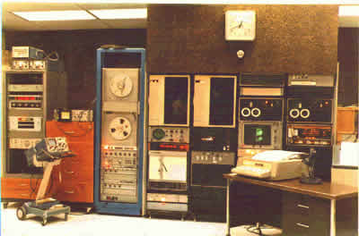

Five things you probably don't know about me
I've now been tagged not
once,
but
twice in the game
of blog-tag that's been going on. It's clearly time to get it over
with, so here are five things you probably don't know about me:
- When I was a kid my favorite place to play was my
grandfathers shop and "boneyard". The boneyard was a few acres
next to the shop where he parked all of his old (dead) farm
equipment. It's history stretched back to about 1910 and had
several slowly decaying (but grand) steam tractors. They were my
favorites. The shop had a full set of blacksmithing tools. Lots
of fun!
- My first job was cleaning the sidewalks at a small
strip mall in Calgary. My favorite shop there was the only
one who was never my custormer: a baker named Seebe Borge (I hope
I got his name right). I kept trying to convince him to pay me to
shovel the sidewalks, and he kept saying no, but he'd regularly
hand me half a loaf of bread, fresh out of the oven, covered in
obscene quantities of butter, sugar and cinammon. He'd eat the
other half. Perfect food when standing outside watching the snow
fall.
- Before I discovered computers, I wanted to be a forest warden
for the National Parks Service.
- My first experience with computing was building a machine to
play tic-tac-toe for a science fair. I built it out of old
telephone relays and television parts that I obtained by dumpster
diving (I could never afford new anything). The amusing bit was
that the TVs were all vacuum tube machines that didn't have
anything like a low voltage power supply usable by the relays. So
I ran the relays on 300V, which often got exciting :-)
- My first computing job was writing software to process data
from the ISIS II
satellite. The picture on the right is the machine I worked
on, a PDP-8/I with 8K of RAM (eventually 12K). The pairs of white
circles are DECtape drives that the OS swapped on (no disk!). To
the left is a pair of 9 track tape drives, and to the left of
them in the blue cabinet is the analog tape drive where we read
the raw satellite data from. The display used for photography was
on the right, just off the screen. It had a phenominal 2Kx2K
resolution - which was hard given that the framebuffer was 4K of
RAM from the main memory. It was 6 bits/pixel, 12 bits/word,
hence 8K pixels or 4 scan lines in the framebuffer. We could
stear the 2Kx4 pixels up and down on the screen, which had a
camera attached to it. It took quite a while to pass enough data
through to get a full frame.
So, who should I tag? I'll start with
Bob Brewin and
Tim Marsland, the co-software-CTOs
at Sun, neither of which have been doing enough blogging. My boss,
Laurie
Tolson, who still hasn't started blogging. I should tag a
couple more, but these will cause me enough trouble for now.